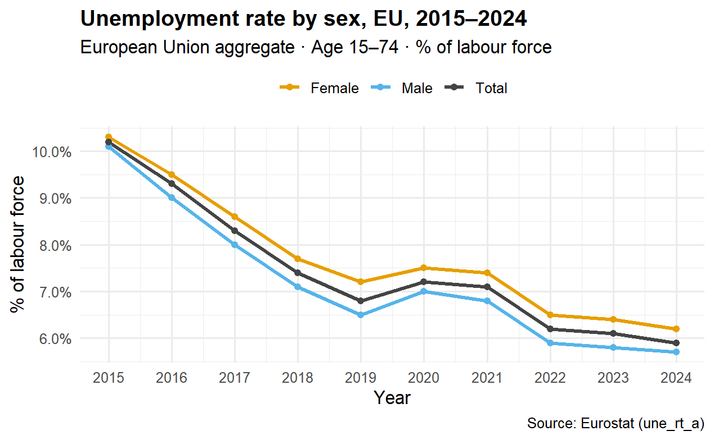
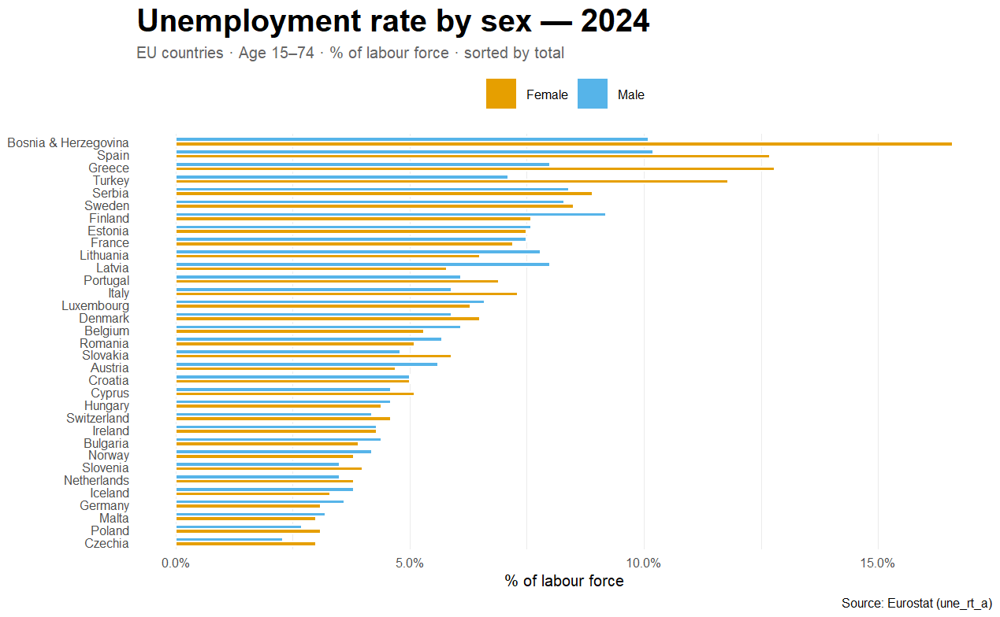
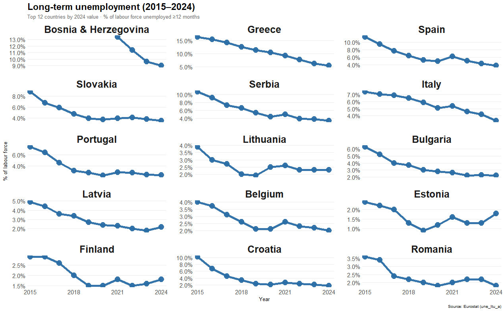

One chart where the gridlines shout louder than the data, and two redesigns that put the comparison first. Course project for STAT 515 at George Mason University.

Issue noted: the visual hierarchy is weak. Gridlines compete with the data, the colour pairing has low contrast for some viewers, and the focus of the story is unclear.
Goal of the redesigns: improve comparison, strengthen focus and reduce non data ink.

A sorted horizontal bar chart that emphasizes rank and magnitude across countries. Labels are easier to read, and the male and female rates sit side by side for direct comparison.

Small multiples show change over time for the 12 countries with the highest 2024 value. The layout reduces overplotting and lets readers scan each trend quickly.